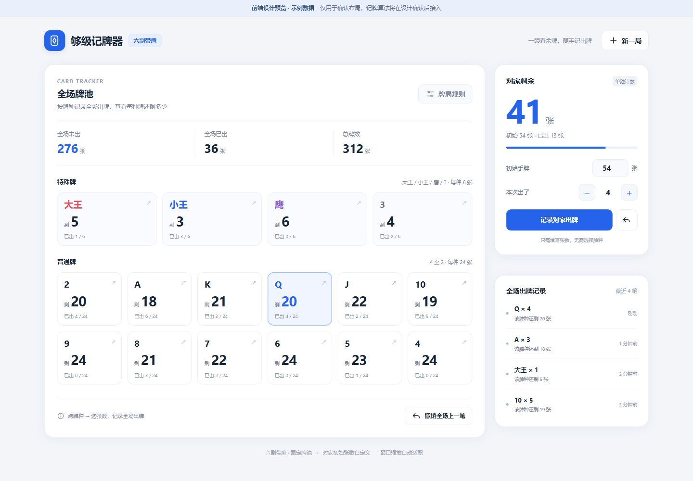
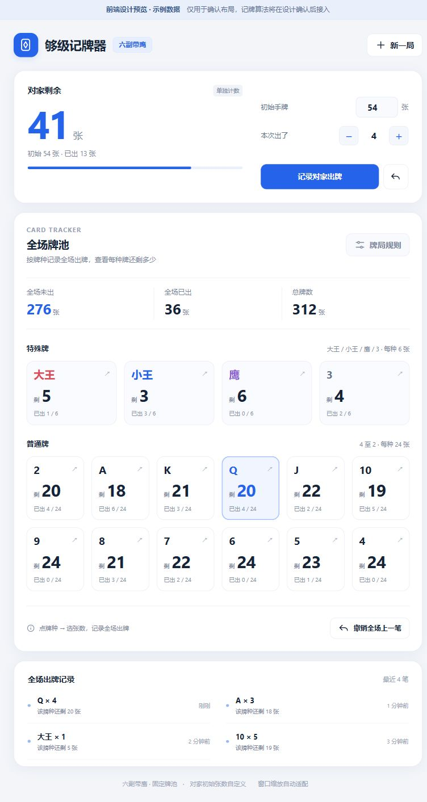
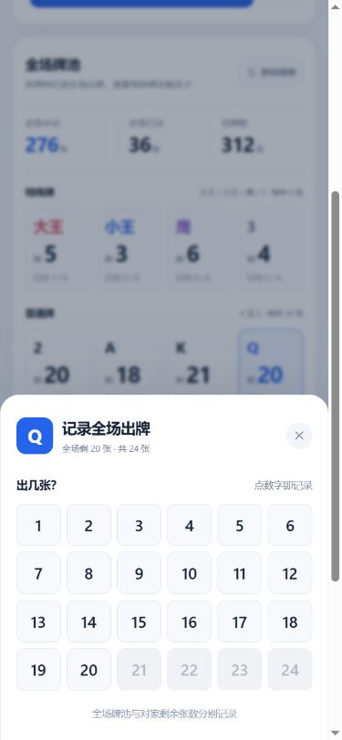

六副带鹰 · 响应式界面预览
同一套页面，随窗口宽度自动调整布局

本次确认的规则与操作
大王 / 小王 / 鹰 / 3：每种 6 张；普通牌：每种 24 张。
对家初始手牌：由你填写，图中 54 张仅为示例。
全场按牌种记录与对家按张数计数分别操作。


随窗口适配
320px 窄窗口无横向溢出。
特殊牌选 1–6 张。
普通牌选 1–24 张。
同一套页面，随窗口宽度自动调整布局

大王 / 小王 / 鹰 / 3：每种 6 张；普通牌：每种 24 张。
对家初始手牌：由你填写，图中 54 张仅为示例。
全场按牌种记录与对家按张数计数分别操作。


320px 窄窗口无横向溢出。
特殊牌选 1–6 张。
普通牌选 1–24 张。